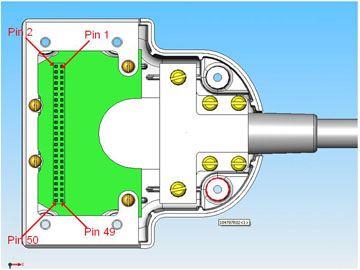

Operating Documentation
Direction 5500113, Rev# 3
Discovery MR750 3.0T Service Methods
Module Version 4.0, Version Date 8/19/10
Operating Documentation |
| Required Persons | Procedure Timing |
| 1 | 60 minutes |
The following tips can be used to troubleshoot common problems with the 3.0T 8-Channel Wrist Coil by Invivo, catalog M3340CA.
Digital Volt Meter (DVM)
The HD Wrist Array coil configuration name must be installed to run this tool.
Problem: Unable to prescan or scanning and receiving no signal.
Possible Solution:
Ensure the appropriate system coil was selected. Refer to the Operator's Manual, 5268024-4, for additional information.
Ensure the green light for Port A is illuminated. This indicates the coil is properly plugged into the system.
Ensure the landmark is correct and the cradle did not unlatch.
Ensure the scan locations and any Field of View (FOV) offsets are correct.
Perform a Section 5.5 on the external cable. The continuity check must be performed by an authorized GE Service Engineer.
Ensure the coil is positioned with the cable exiting toward the bore.
If still unable to obtain a signal, try to scan (transmit and receive) with the Body Coil. For this test, be sure to remove the imaging coil from the magnet bore before scanning with the body coil. If still receiving no signal, there may be a problem with the MR system. If the scan completes successfully, there may be a problem with the Invivo coil. Contact GE for further assistance. If unable to scan with the substitute coil, there may be a system problem related to this particular coil type.
Problem: Image quality is not what is expected given the parameters selected.
Possible Solution:
Review the selected protocol. If performing the Periodic Quality Assurance, be sure the protocol is identical to the protocol provided in the Systems Recommended Protocols. If performing diagnostic images, NEX or FOV may need to be increased.
Perform a Section 5.5 on the external cable. The continuity check must be performed by an authorized GE Service Engineer.
Ensure there are no loops in the cables.
Ensure there are no metal or ferromagnetic objects close to the coil, patient or magnet (i.e., safety pin, hair pin).
Ensure the coil is properly positioned.
Ensure the center frequency is within the frequency adjustment range for the system.
Ensure the R1, R2, and TG values from the prescan are within normally expected ranges.
Cleaning the electrical contacts that connect the upper and lower halves with isopropyl alcohol and a cotton swab improves the coil's SNR on occasion. If not done already, perform a Multi-Coil Quality Assurance test. If the values obtained do not fall within normal operating parameters, investigate further by performing a phantom scan with the Body Coil. For this test, be sure to remove the imaging coil from the magnet bore before scanning with the body coil. If still having the same problems, this is probably an MR system issue. If the body coil scan is satisfactory, acquire a scan using another coil of the same type plugged into the same system port (Port A). If the image quality is visibly improved, there may be a problem with the Invivo Coil. Contact GE for further assistance. If the image quality still suffers, there may be a system problem related to imaging with this type of coil.
Problem: There is a black line or signal void on the image.
Possible Solution: Ensure there is no metal present in the area being scanned or on the patient.
Problem: Some or all of the images appear shaded or exhibit uneven signal or banding.
Possible Solution: Confirm that no metallic objects are located nearby or outside the FOV. This is especially important on images utilizing fat saturation.
If fat saturation is being used, ensure that the CFA fine adjustment is optimized.
Problem: The system will not recognize the coil or scan with the coil attached.
Possible Solution: Perform the Cable Continuity Check below.
| ||||
| The center pins of the System Receive coaxial connectors are extremely fragile. Do NOT attempt to make any measurements at these center pins. | ||||
With the coil cable disconnected, use a multimeter to ensure an open circuit condition exists between the designated pin and Ground (GND) for each signal channel as shown in the table below.
Table 1: Coil Cable Connector Short Circuit and Open Circuit Check
| Signal Channel | Coil Cable Connector See Illustration 1. | System Connector See Illustration 2. | ||
| RF 1 | Pin 45 | C1 | ||
| RF 2 | Pin 1 | C2 | ||
| RF 3 | Pin 4 | C3 | ||
| RF 4 | Pin 8 | C4 | ||
| RF 5 | Pin 28 | D1 | ||
| RF 6 | Pin 44 | D2 | ||
| RF 7 | Pin 48 | D3 | ||
| RF 8 | Pin 49 | D4 | ||
| GND |
| |||
Illustration 1: Coil Cable Connector

If one or more of the readings indicates a short, replace the cable. If all of the above readings indicate an open circuit condition, proceed to PIN Diode Control Channels Check below.
With the coil cable disconnected, use a multimeter to determine continuity between the designated pins for each control channel below. Also, ensure the control pins are not shorted to GND.
Table 2: Coil Cable Connector Continuity Check
| Control Channel | Coil Cable Connector See Illustration 1. | System Connector See Illustration 2. | ||
| MC Bias 1 | Pin 15 | J1 | ||
| MC Bias 2 | Pin 7 | J2 | ||
| MC Bias 3 | Pin 12 | J3 | ||
| MC Bias 4 | Pin 18 | J4 | ||
| MC Bias 5 | Pin 20 | J5 | ||
| MC Bias 6 | Pin 24 | J6 | ||
| MC Bias 7 | Pin 34 | J7 | ||
| MC Bias 8 | Pin 39 | J8 | ||
| GND |
| K1-K8, M6, MC Shield |
Illustration 2: System Connector

If one or more of the reading are 3 ohms, replace the coil cable. If all the readings are 3 ohms, proceed to the PIN Diodes Check below.
With the coil cable connected to the coil, use a multimeter to measure the diode drop across the coil connector pins as detailed below. Use the System Connector illustration above for pin identification while performing this procedure.
Table 3: PIN Diode Expected Readings
| System Connector | Reading | |||
| Positive Lead | Negative Lead | |||
| J1 | GND | [MC Shield] | 0.65 ±0.1 | |
| GND | [G1] | J1 | Open | |
| J2 | GND | [MC Shield] | 0.65 ±0.1 | |
| GND | [G2] | J2 | Open | |
| J3 | GND | [MC Shield] | 0.65 ±0.1 | |
| GND | [G3] | J3 | Open | |
| J4 | GND | [MC Shield] | 0.65 ±0.1 | |
| GND | [G4] | J4 | Open | |
| J5 | GND | [MC Shield] | 0.65 ±0.1 | |
| GND | [G5] | J5 | Open | |
| J6 | GND | [MC Shield] | 0.65 ±0.1 | |
| GND | [G6] | J6 | Open | |
| J7 | GND | [MC Shield] | 0.65 ±0.1 | |
| GND | [G7] | J7 | Open | |
| J8 | GND | [MC Shield] | 0.65 ±0.1 | |
| GND | [G8] | J8 | Open | |
If one or more of the readings indicates a short, replace the coil.
If all of the above readings are correct, re-perform Coil Imaging Verification. If the problem still exists, replace the 3.0T HD 8-Channel Wrist Coil.
Inspect the coil for visible signs of wear. If the coil housings will not seat with each other or if the latch mechanism will not work properly, contact Service.